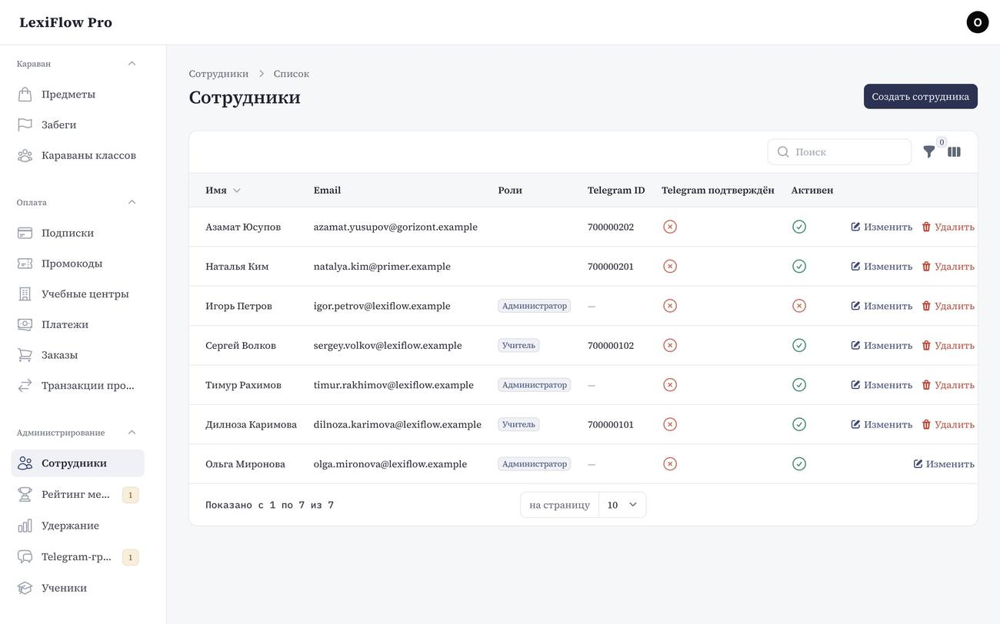
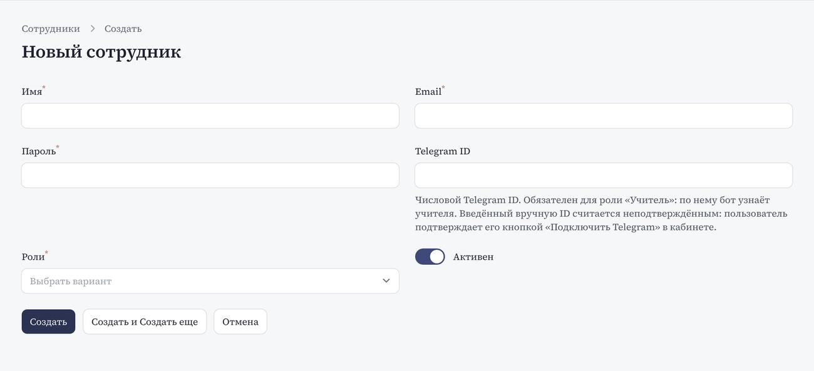
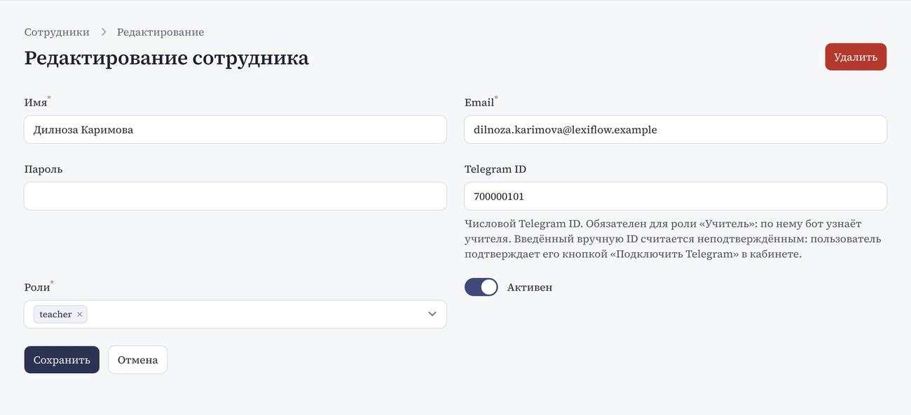

Раздел Администрирование → Сотрудники — учётные записи людей, которые входят в панели: администраторы, учителя, а также владельцы и учителя учебных центров. Раздел доступен только администратору.

Рис. Список сотрудников: имя, почта, роли, Telegram ID, подтверждён ли Telegram, активен ли. У владельцев центров («Наталья Ким», «Азамат Юсупов») роли в /admin нет — они работают в кабинете центра.
Поиск — по имени и почте; фильтры — «Активность» и «Роль». Колонки «Последний вход» и «Создан» включаются кнопкой выбора колонок над таблицей.
Завести учителя или администратора
Нажмите Создать сотрудника.
Заполните Имя, Email (по нему человек входит) и Пароль (не короче 8 символов).
Для учителя обязательно укажите Telegram ID — числовой идентификатор его аккаунта Telegram: по нему бот узнаёт учителя в группах.
Выберите Роли: «Учитель» или «Администратор» (можно обе).
Оставьте включённым Активен и нажмите Создать.
Передайте человеку адрес панели, почту и пароль удобным защищённым способом. Администратор при первом входе включит двухфакторную защиту.
Учителя назначьте на его группы: Telegram-группы → группа → поле Учителя.

Рис. Форма нового сотрудника.
Поле
Пояснение
Email
уникальный; служит логином
Пароль
при создании обязателен. При правке оставьте пустым, чтобы не менять; введите новый, чтобы сменить
Telegram ID
число. Введённый вручную ID считается неподтверждённым: бот по нему узнаёт учителя в группе, но привязать группу к центру с ним нельзя. Человек подтверждает Telegram сам кнопкой «Подключить Telegram» в кабинете /org; колонка «Telegram подтверждён» показывает, кто это сделал. Если стереть или изменить ID, подтверждение снимается
Роли
«Администратор» — вся платформа и деньги; «Учитель» — свои группы. Без роли человек в /admin не войдёт
Активен
снятый флажок закрывает вход в панель, не удаляя запись

Рис. Учётная запись учителя Дилнозы Каримовой.
Сменить пароль сотруднику
Откройте сотрудника кнопкой Изменить.
Введите новый пароль в поле Пароль и нажмите Сохранить.
Сообщите сотруднику новый пароль. Двухфакторная защита при этом не сбрасывается.
Отключить или удалить сотрудника
Отключить — снимите флажок Активен и сохраните. Запись и история остаются, войти нельзя. Это обратимо.
Удалить — кнопка в строке списка, с подтверждением. Массового удаления нет. Себя удалить нельзя — у вашей строки нет кнопки «Удалить».
Удаление необратимо. Если у сотрудника есть история (выдавал Pro, запускал экзамены, владеет центром), лучше отключите его, а не удаляйте. Не удаляйте последнего активного администратора.